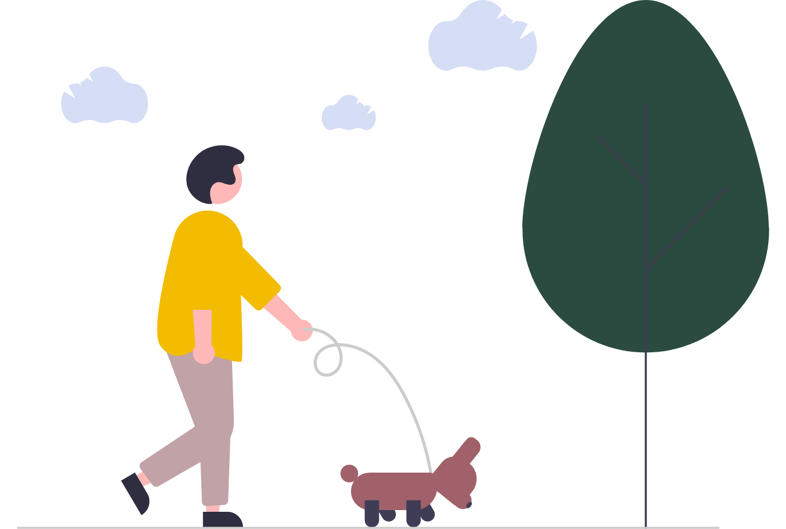

Mindfulness in a Nutshell
Imagine being fully aware of what's happening right now, from your thoughts and feelings to your body and the world around you. That's mindfulness! It's about paying attention in a kind and gentle way, without judgment. Instead of getting caught up in the past or worrying about the future, mindfulness helps us focus on the present moment.
While mindfulness helps us stay calm in stressful situations, it actually goes deeper than that. By observing our thoughts and feelings without judgment, we can develop a greater understanding of ourselves. This can lead to increased self-compassion, allowing us to navigate difficult emotions with more grace and acceptance.

The Four Pillars of Mindfulness
Some of the most beautiful benefits of meditation are that it makes your heart more supple, transforms your emotions, and opens the door to heightened self-awareness. Once you have been able to see directly as an experience that most thoughts, emotions, and behavior that manifest in life are not about you, they are merely happening to you and are impermanent—you learn to live lightly.
1
Body Mindfulness The first pillar is mindfulness of the physical self. Give attention to each part of the body, not just a cursory observation but an immersive scan of your physical self from within. Learn more
2
Mindfulness of Feelings The second foundation is mindfulness of feelings or vedana. More subtle than the breath and body are feelings. They can be pleasant, unpleasant, or neutral. Learn more
3
Mindfulness of Mind The third pillar is mindfulness of our states of mind. When you sit down for meditation, you may observe that the mind is all over or there may be too many thoughts Learn more
4
Mindfulness of Dharma At its core, dharma goes beyond a limited religious concept. In some, it stands for righteous path, in others, it stands for truth, norms, principles, teachings, or even phenomena. Learn more